library(ggplot2)
library(ggthemes)
library(dplyr)
library(readr)
library(tibble)
library(sf)
library(spData)
library(geobr)
library(censobr)
library(arrow)
library(BAMMtools)Objetos espaciais
Dados espaciais são um tipo especial de dado geralmente representados por uma de três formas geométricas: pontos, linhas ou polígonos. Em alguns casos, como visto no post anterior, é possível tratar estes dados como dados tabulares quaisquer. Na maioria dos casos, contudo, será necessário maior cuidado. Isto acontece não somente por causa da complexidade das figuras geométricas, mas também porque dados espaciais carregam uma quantidade relativamente expressiva de metadados. Estes metadados caracterizam diversos aspectos sobre estes dados. Uma das funções destes metadados é de explicar ao R como aqueles dados estão projetados no espaço.
Esta é uma discussão bastante técnica e neste post vou apresentar apenas o essencial para a construção de mapas. Isto é, vou ignorar os detalhes da projeção e até de convenções cartográficas e vou me focar em casos aplicados simples. Uma introdução a estes assuntos pode ser vista em Geocomputation with R.
A lista completa de pacotes necessários para acompanhar este post segue abaixo.
Introdução ao sf
O pacote {sf} funciona como um data.frame com uma coluna especial chamada geometry. É possível ignorar a existência desta coluna e trabalhar normalmente com seus dados, usando todo o seu conhecimento acumulado previamente com dados tabulares convencionais. Eventualmente, será necessário juntar um shapefile com uma base de dados e até com outro shapefile; o {sf} também facilita isto bastante.
Como comentado acima, vou ignorar a maior parte das convenções cartográficas (escala, rosa dos ventos, etc.). Vale comentar, contudo, que é possível incluir estes elementos no R sem grandes problemas.
Vou discutir majoritariamente sobre objetos espaciais no formato de vetores (vector shape file) já que eles são mais prevalentes nas ciências socias em geral.
Introdução a objetos espaciais
Há três peças fundamentais que vamos ver: pontos, linhas e polígonos. Nos três casos, usa-se a mesma função geom_sf() para montar a visualização. Os elementos estéticos seguem a mesma lógica das funções geom_point(), geom_line() e geom_rect(), respectivamente. Assim, para tornar um objeto espacial, em formato de linha, mais grosso, usa-se linewidth = 2, por exemplo.
Vou começar assumindo um conhecimento mínimo de R apesar deste ser um capítulo já avançado na série de tutoriais de ggplot2.
A estrutura de objetos espaciais é um sf/data.frame ou um “spatial data frame”. Este objeto é essencialmente igual a um data.frame convencional, mas ele possui uma coluna especial chamada geom ou geometry. Para criar um objeto sf a partir de um data.frame ou tibble usa-se a função st_as_sf.
Pontos
O tipo mais simples de objeto geométrico é o ponto, definido por uma coordenada horizontal e uma coordenada vertical. O exemplo abaixo mostra como criar um spatial data.frame de pontos a partir dos dados de latitude e longitude da base do CEM. O primeiro código abaixo importa a base de dados tabulares e filtra os dados apenas para o ano de 2008 em São Paulo.
cem <- read_csv("...")
cem <- cem |>
mutate(code_muni = as.numeric(substr(ap2010, 1, 7))) |>
filter(code_muni == 3550308)
cem08 <- filter(cem, ano_lanc == 2008)Note que é preciso escolher um sistema de projeção e eu escolho o SIRGAS 2000 EPSG: 4674, um sistema de projeção de referência para a América Latina. Para verificar o tipo de geometria dos objetos uso st_geometry.
points_cem <- st_as_sf(cem08, coords = c("lon", "lat"), crs = 4674)
st_geometry(points_cem)Geometry set for 394 features
Geometry type: POINT
Dimension: XY
Bounding box: xmin: -46.79478 ymin: -23.70684 xmax: -46.43215 ymax: -23.45133
Geodetic CRS: SIRGAS 2000
First 5 geometries:Para gerar um gráfico a partir dos nossos dados, usa-se a função geom_sf, sem argumento algum. Note que este gráfico é idêntico ao que geramos antes usando geom_point.
ggplot(points_cem) +
geom_sf()
Como comentei, há três tipos principais de objetos geométricos: pontos, linhas e polígonos. É possível gerar linhas e polígonos arbitrários a partir de coordenadas usando as funções do pacote sf. Na prática, é pouco usual criar objetos geométricos desta maneira e a sintaxe para desenhar mesmo formas geométricas simples como triângulos e quadrados é bastante trabalhosa, como o código abaixo deixa evidente.
#> Define as coordenadas do quadrado
quadrado = list(
rbind(
c(0, 0),
c(0, 1),
c(1, 1),
c(1, 0),
#> Note que é preciso repetir (0, 0)
c(0, 0)
)
)
#> Converte as coordenads em um POLYGON
quadrado <- st_polygon(quadrado)
#> Converte em SFC
quadrado <- st_sfc(quadrado)
#> Plota o quadrado
ggplot(quadrado) +
geom_sf()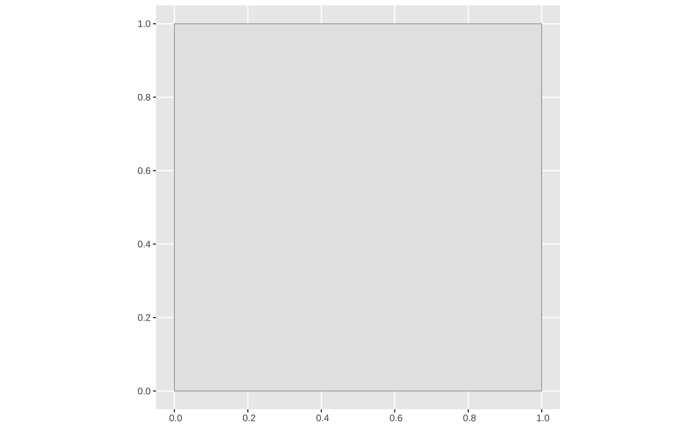
Linhas
O pacote spData traz várias bases de dados espaciais interessantes. Para exemplificar um caso de linhas, vamos explorar a base seine que mostra os rios Seine, Marne e Yonne, na França.
library(spData)
spData::seineSimple feature collection with 3 features and 1 field
Geometry type: MULTILINESTRING
Dimension: XY
Bounding box: xmin: 518344.7 ymin: 6660431 xmax: 879955.3 ymax: 6938864
Projected CRS: RGF93 / Lambert-93
name geometry
1 Marne MULTILINESTRING ((879955.3 ...
2 Seine MULTILINESTRING ((828893.6 ...
3 Yonne MULTILINESTRING ((773482.1 ...Novamente, podemos verificar o tipo de geometria deste objeto. Note que os dados estão em uma projeção específica (RGF93 / EPSG2154) em que os dados não estão em latitude/longitude, mas sim em metros.
st_geometry(seine)Geometry set for 3 features
Geometry type: MULTILINESTRING
Dimension: XY
Bounding box: xmin: 518344.7 ymin: 6660431 xmax: 879955.3 ymax: 6938864
Projected CRS: RGF93 / Lambert-93O gráfico abaixo mostra o gráfico padrão usando geom_sf e mais alguns exemplos de customização. Note que os argumentos são essencialmente os mesmos que se fornece à função geom_line/geom_path.
#|
ggplot(seine) + geom_sf()
ggplot(seine) + geom_sf(lwd = 1)
ggplot(seine) + geom_sf(lwd = 0.4, color = "dodgerblue3")
ggplot(seine) + geom_sf(linetype = 2)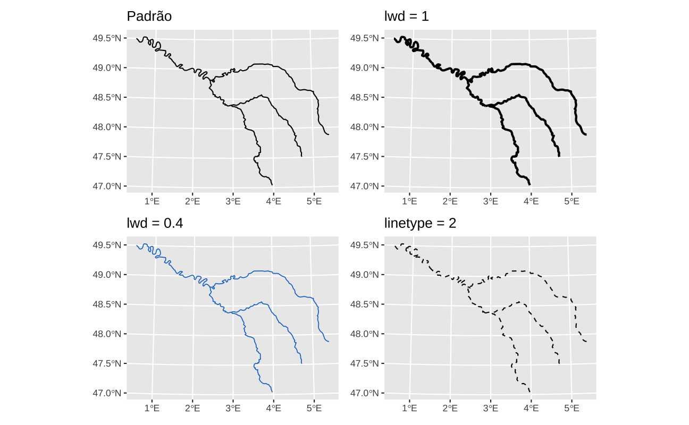
Polígonos
Vamos começar importando um shapefile dos estados do Brasil, usando o excelente {geobr}. Note que este objeto possui uma coluna geom que guarda um objeto do tipo MULTIPOLYGON. Este é um tipo de polígono.
ufs <- geobr::read_state(showProgress = FALSE)
ufsSimple feature collection with 27 features and 5 fields
Geometry type: MULTIPOLYGON
Dimension: XY
Bounding box: xmin: -73.99045 ymin: -33.75208 xmax: -28.83594 ymax: 5.271841
Geodetic CRS: SIRGAS 2000
First 10 features:
code_state abbrev_state name_state code_region name_region
1 11 RO Rondônia 1 Norte
2 12 AC Acre 1 Norte
3 13 AM Amazonas 1 Norte
4 14 RR Roraima 1 Norte
5 15 PA Pará 1 Norte
6 16 AP Amapá 1 Norte
7 17 TO Tocantins 1 Norte
8 21 MA Maranhão 2 Nordeste
9 22 PI Piauí 2 Nordeste
10 23 CE Ceará 2 Nordeste
geom
1 MULTIPOLYGON (((-63.32721 -...
2 MULTIPOLYGON (((-73.18253 -...
3 MULTIPOLYGON (((-67.32609 2...
4 MULTIPOLYGON (((-60.20051 5...
5 MULTIPOLYGON (((-54.95431 2...
6 MULTIPOLYGON (((-51.1797 4....
7 MULTIPOLYGON (((-48.35878 -...
8 MULTIPOLYGON (((-45.84073 -...
9 MULTIPOLYGON (((-41.74605 -...
10 MULTIPOLYGON (((-41.16703 -...O código abaixo monta o mapa.
ggplot(ufs) +
geom_sf()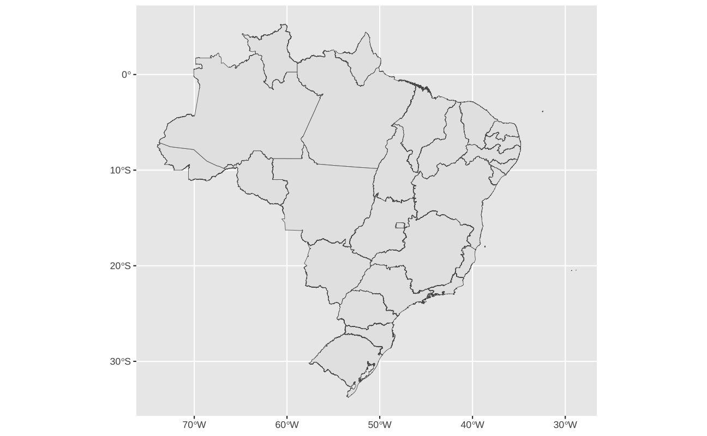
A função geom_sf aceita vários argumentos estéticos já que ela desenha pontos, linhas e polígonos. No caso do mapa abaixo, color define a cor do contorno/fronteira do polígono, enquanto fill define a cor do interior do polígono.
ggplot(ufs) +
geom_sf(color = "gray90", aes(fill = name_region), lwd = 0.05) +
scale_fill_brewer(name = "", type = "qual") +
theme(legend.position = "top")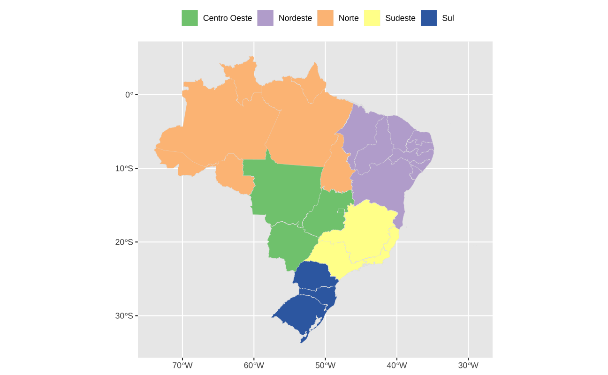
Por fim, vale notar que é possível usar a função coord_sf para fazer um “zoom” no mapa.
ggplot(ufs) +
geom_sf(aes(fill = name_region), lwd = 0.05) +
scale_fill_brewer(name = "", type = "qual") +
theme(legend.position = "top") +
coord_sf(xlim = c(-60, -48), ylim = c(-35, -20))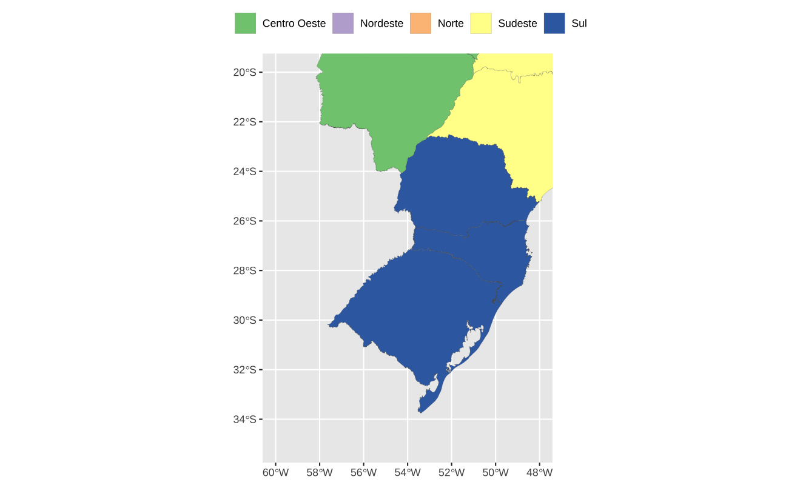
Mapas coropléticos
Um mapa coroplético é um mapa colorido, em que as cores representam valores de alguma variável. Há inúmeros exemplos de mapas coropléticos. Abaixo listo alguns posts recentes em que faço mapas deste tipo.
Juntando shapes e dados
Para compor este tipo de mapa é necessário combinar dados tabulares com objetos geométricos. No exemplo abaixo, vamos novamente considerar a tabela de tipo de propriedade do domicílio por UF.
Code
rented <- tibble::tribble(
~abbrev_state,
~share_apto,
~share_rented,
~name_region,
#------------#------------#--------------#------------#
"RO",
8,
11.1,
"Norte",
"AC",
7.47,
6.93,
"Norte",
"AM",
15.8,
7.26,
"Norte",
"RR",
14.3,
11.7,
"Norte",
"PA",
4.53,
6.39,
"Norte",
"AP",
10.7,
6.34,
"Norte",
"TO",
3.17,
11.7,
"Norte",
"MA",
4.06,
5.74,
"Nordeste",
"PI",
4.08,
5.15,
"Nordeste",
"CE",
9.85,
9.68,
"Nordeste",
"RN",
9.27,
10.8,
"Nordeste",
"PB",
11.9,
9.18,
"Nordeste",
"PE",
10.4,
9.98,
"Nordeste",
"AL",
6.32,
10.0,
"Nordeste",
"SE",
12.0,
11,
"Nordeste",
"BA",
12.0,
7.61,
"Nordeste",
"MG",
14.0,
10.5,
"Sudeste",
"ES",
21.7,
10.7,
"Sudeste",
"RJ",
26.8,
10.7,
"Sudeste",
"SP",
19.4,
12.7,
"Sudeste",
"PR",
11.9,
11.7,
"Sul",
"SC",
17,
11.8,
"Sul",
"RS",
16.5,
8.46,
"Sul",
"MS",
3.67,
11.9,
"Centro Oeste",
"MT",
3.29,
12.7,
"Centro Oeste",
"GO",
9.88,
13.6,
"Centro Oeste",
"DF",
35.4,
17.8,
"Centro Oeste"
)Para juntar esta base com o shapefile das UFs, gerado pelo geobr, basta usar a função left_join do pacote dplyr. Esta função tem o cuidado de preservar a geometria do objeto espacial. Note que o objeto espacial (sf) deve sempre vir na esquerda: left_join(objeto_espacial, base_de_dados, by = "chave").
ufs_rent <- left_join(ufs, rented, by = "abbrev_state")
ggplot(ufs_rent) +
geom_sf(aes(fill = share_rented)) +
scale_fill_distiller(direction = 1) +
coord_sf(xlim = c(NA, -35))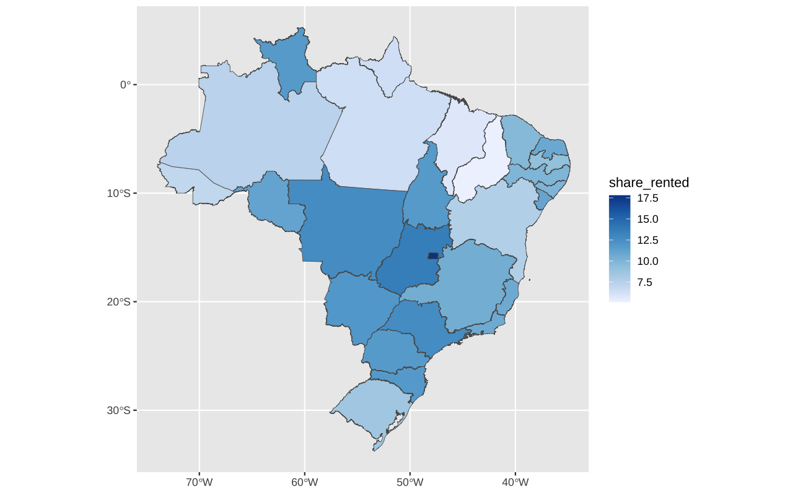
Temas para mapas
Não há grande variedade de temas para mapas. Em geral, usa-se ou ggthemes::theme_map() ou theme_void(). Estes temas apagam a maioria dos elementos temáticos do gráfico, como eixos e linhas de grade.
base_map <- ggplot(ufs_rent) +
geom_sf(aes(fill = share_rented)) +
scale_fill_distiller(direction = 1, palette = 2) +
coord_sf(xlim = c(NA, -35))
base_map +
ggtitle("theme_map()") +
ggthemes::theme_map()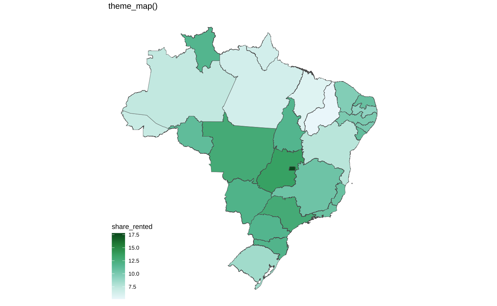
base_map +
ggtitle("theme_void()") +
theme_void()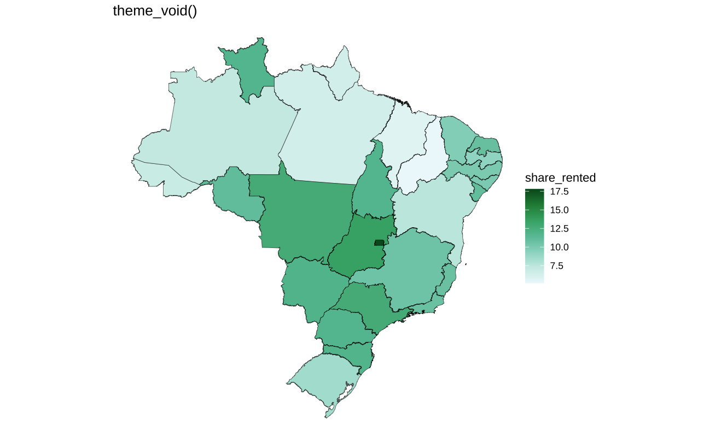
Discretizando dados contínuos
O olho humano não é particularmente apto a distinguir diferenças sutis entre cores, quando dispotas lado a lado. Neste sentido, pode ser difícil captar certas nuances nos mapas coropléticos acima.
Há três maneiras simples de agrupar dados contínuos para fazer mapas:
- Usar alguma variação de percentil, isto, quintis, decis, etc.
- Usar o algoritmo de Jenks.
- Usar a distribuição dos dados.
- Definir quebras manualmente.
Vamos montar o mapa da renda domiciliar per capita de Porto Alegre a nível de setor censitário. Para importar os dados vamos usar o pacote censobr. O código abaixo é adaptado da páginas de exemplos do pacote.
Code
library(arrow)
library(censobr)
#> Importa o shapefile dos setores censitários de Porto Alegre
tracts <- geobr::read_census_tract(
code_tract = 4314902,
year = 2010,
simplified = FALSE,
showProgress = FALSE
)
#> Importa a tabela Basico do Censo (2010)
tract_basico <- read_tracts(
year = 2010,
dataset = "Basico",
showProgress = FALSE
)
#> Importa a tabela DomicilioRenda do Censo (2010)
tract_income <- read_tracts(
year = 2010,
dataset = "DomicilioRenda",
showProgress = FALSE
)
#> Seleciona as colunas relevantes
tract_basico <- tract_basico |>
dplyr::filter(code_muni == "4314902") |>
dplyr::select('code_tract', 'V002')
tract_income <- tract_income |>
dplyr::filter(code_muni == "4314902") |>
dplyr::select('code_tract', 'V003')
#> Juntas as bases e importa os dados
tracts_df <- dplyr::left_join(tract_basico, tract_income)
tracts_df <- dplyr::collect(tracts_df)
#> Calcula a renda per capita
tracts_df <- dplyr::mutate(tracts_df, income_pc = V003 / V002)
#> Junta os dados com o shapefile
poa_tracts <- left_join(tracts, tracts_df, by = "code_tract")O mapa abaixo mostra o renda domiciliar per capita na zona central de Porto Alegre em cada setor censitário. Pode-se ver, de maneira geral, uma concentração de alta renda na região central em torno dos bairros Moinhos de Vento e Auxiliadora. Já as regiões periféricas da cidade tem renda mais baixa, com exceção de uma parte da Zona Sul da cidade.
ggplot(poa_tracts) +
geom_sf(aes(fill = income_pc), color = "white", lwd = 0.01) +
scale_fill_distiller(name = "", palette = "Greens") +
coord_sf(xlim = c(-51.32, -51.1), ylim = c(-30.15, -30)) +
ggthemes::theme_map()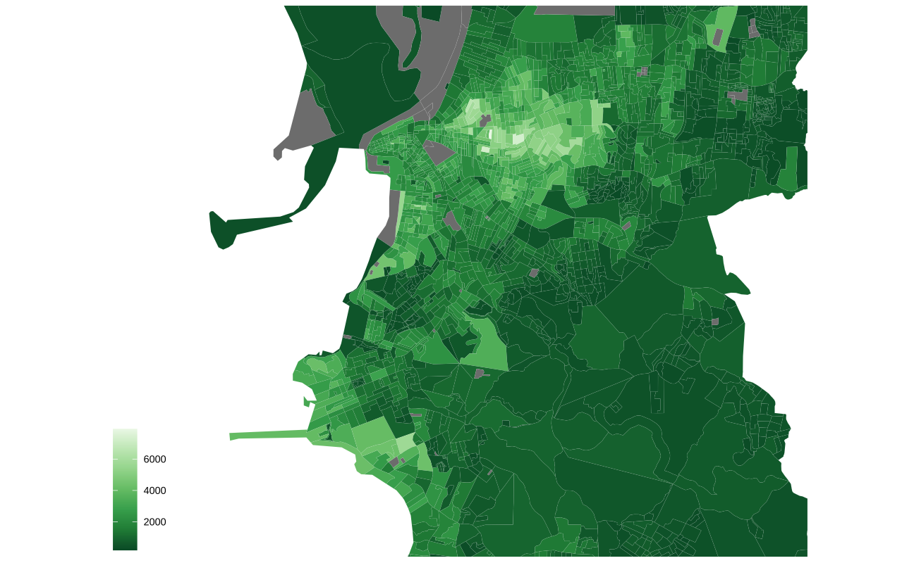
Quintis e decis
É relativamente simples classificar os dados em percentis usando a função dplyr::ntile.
# Quintis e decis
poa_tracts <- poa_tracts |>
mutate(
quintil = factor(ntile(income_pc, 5)),
decil = factor(ntile(income_pc, 10))
)O mapa abaixo mostra a distribuição espacial do rendimento domiciliar per capita em Porto Alegre por quintis. Nesta visualização, é bastante imediato perceber os grupos de renda da cidade. Note que a legenda do mapa, infelizmente, não mostra o intervalo de renda de cada grupo. Para montar uma legenda mais instrutiva é preciso um pouco de criatividade. A solução mais imediata, que consome menos linhas de código, é usar a função cut em conjunto com a função quantile. Na minha experiência, os resultados desta combinação costumam ser pouco satisfatórios; o trabalho adicional de se construir a legenda costuma compensar.
ggplot(poa_tracts) +
geom_sf(aes(fill = quintil), color = "white", lwd = 0.1) +
scale_fill_brewer(name = "", palette = "Greens") +
ggtitle("Mapa de quintis") +
coord_sf(xlim = c(-51.32, -51.1), ylim = c(-30.15, -30)) +
ggthemes::theme_map()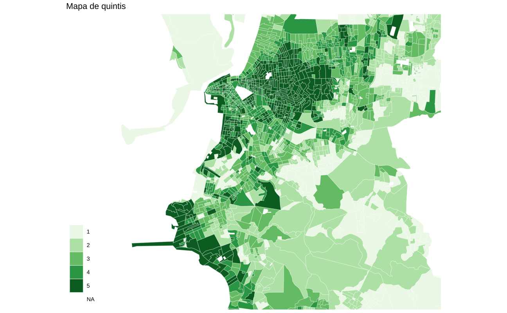
O código abaixo calcula os quantis e monta uma legenda. O código pode parecer um pouco grande, mas é fácil criar uma função que reproduz este funcionamento.
q <- quantile(poa_tracts$income_pc, seq(0.2, 0.8, 0.2), na.rm = TRUE)
q <- format(round(q), big.mark = ".", trim = TRUE)
l <- paste(q, q[-1], sep = "-")
l <- c(paste("<", q[1]), l)
l[length(l)] <- paste(">", q[length(q)])
l[1] "< 531" "531-928" "928-1.526" "1.526-2.372" "> 2.372" get_legend_discrete <- function(x) {
y <- suppressWarnings(format(round(x), big.mark = ".", trim = TRUE))
l <- paste(y, y[-1], sep = "-")
l <- c(paste("<", y[1]), l)
l[length(l)] <- paste(">", y[length(y)])
return(l)
}O mapa abaixo mostra a renda per capita em decis. Agora usamos a escala de cores viridis que costuma funcionar bem com mapas.
decis <- quantile(poa_tracts$income_pc, seq(0.1, 0.9, 0.1), na.rm = TRUE)
label_decil <- get_legend_discrete(decis)
ggplot(poa_tracts) +
geom_sf(aes(fill = decil), color = "white", lwd = 0.1) +
scale_fill_viridis_d(name = "", label = label_decil) +
ggtitle("Mapa de Decis") +
coord_sf(xlim = c(-51.32, -51.1), ylim = c(-30.15, -30)) +
ggthemes::theme_map()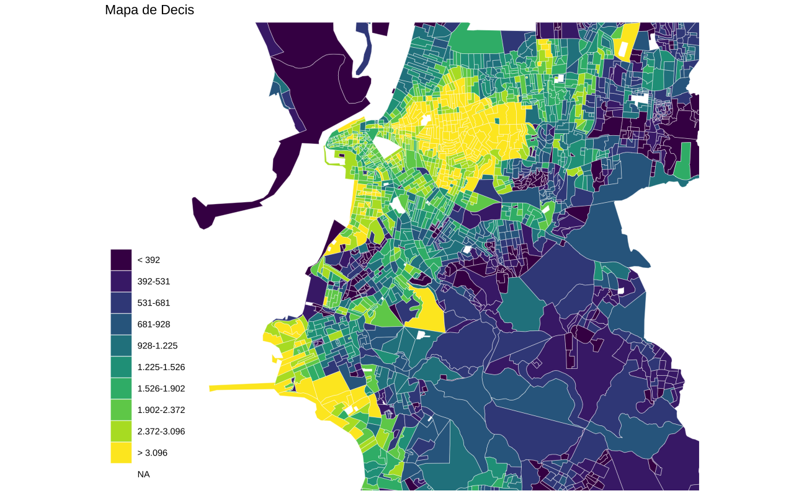
Algoritmo de Jenks
O algoritmo de Jenks, também conhecido como algoritmo de quebras naturais, serve para classificar dados em grupos. Essencialmente, o algoritmo tenta encontrar \(k\) grupos que sejam o mais homogêneos possíveis. Este método foi desenvolvido pelo cartógrafo George Jenks e costuma funcionar muito bem para a construção de mapas. A implementação mais eficiente do algoritmo no R é feita via BAMMtools::getJenksBreaks.
Note que é preciso escolher manualmente o número de grupos \(k\). Em geral, vale experimentar com alguns valores entre 3-9. Para melhor entender o funcionamento do algoritmo, o gráfico abaixo mostra o histograma da variável de renda per capita, onde as linhas retas indicam as quebras entre os grupos.
jenks <- BAMMtools::getJenksBreaks(poa_tracts$income_pc, k = 7)
ggplot(poa_tracts, aes(x = income_pc)) +
geom_histogram(bins = 50) +
geom_vline(xintercept = jenks)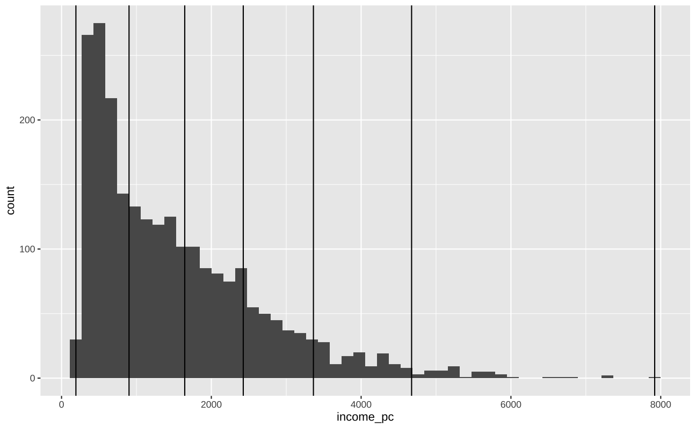
O mapa final é feito abaixo.
poa_tracts <- poa_tracts |>
mutate(
jenks_groups = factor(findInterval(income_pc, jenks))
)
#> Construir a legenda
label_jenks <- get_legend_discrete(jenks)
label_jenks[length(label_jenks)] <- NA
ggplot(poa_tracts) +
geom_sf(aes(fill = jenks_groups), color = NA) +
scale_fill_brewer(
name = "",
palette = "Greens",
labels = label_jenks,
na.value = "gray70"
) +
ggtitle("Mapa de Quebras Naturais (Jenks)") +
coord_sf(xlim = c(-51.32, -51.1), ylim = c(-30.15, -30)) +
ggthemes::theme_map() +
theme(plot.background = element_rect(fill = "white"))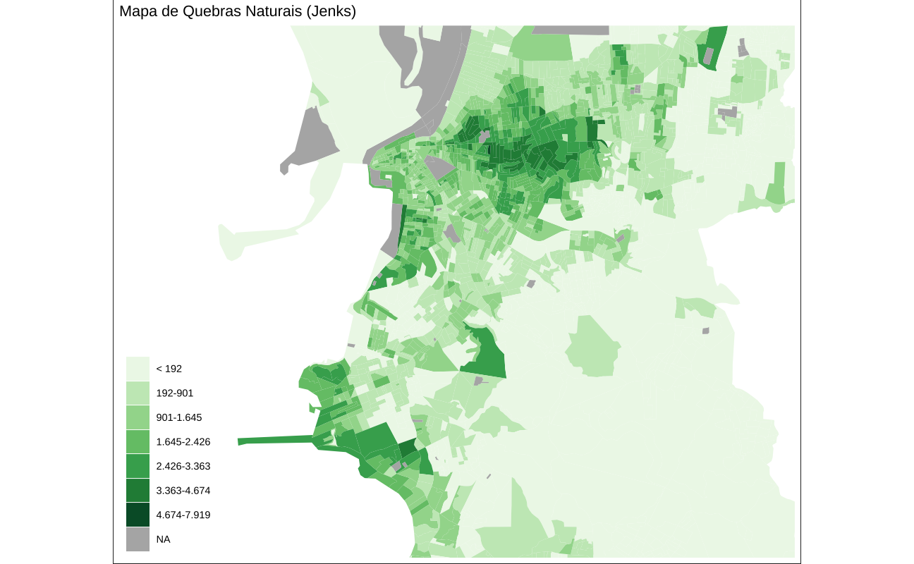
Mapa de desvio-padrão
Também é possível construir mapas usando medidas de dispersão estatísticas tradicionais, como a distância interquartílica ou desvio-padrão. Neste exemplo, vamos classificar os dados como desvios-padrão em relação à média. Para melhorar a visualização, vamos primeiro usar uma transformação log nos dados de renda para que a distribuição fique mais próxima de uma normal.
Este tipo de gráfico funciona bem com escalas de cores divergentes. Note como este mapa destaca as regiões de renda muito alta e também as regiões vulneráveis de renda muito baixa.
poa_tracts <- poa_tracts |>
mutate(
lincome_pc = log(income_pc),
scale_income = as.numeric(scale(lincome_pc)),
sd_groups = factor(findInterval(scale_income, c(-2, -1, 0, 1, 2)))
)
l <- c("< -2", "-2 a -1", "-1 a 0", "0 a 1", "1 a 2", "> 2")
l <- paste(l, "SD")
ggplot(poa_tracts) +
geom_sf(aes(fill = sd_groups), color = NA) +
scale_fill_brewer(
name = "",
palette = "RdBu",
labels = l,
na.value = "gray70"
) +
ggtitle("Mapa de Desvio Padrão") +
coord_sf(xlim = c(-51.32, -51.1), ylim = c(-30.15, -30)) +
ggthemes::theme_map()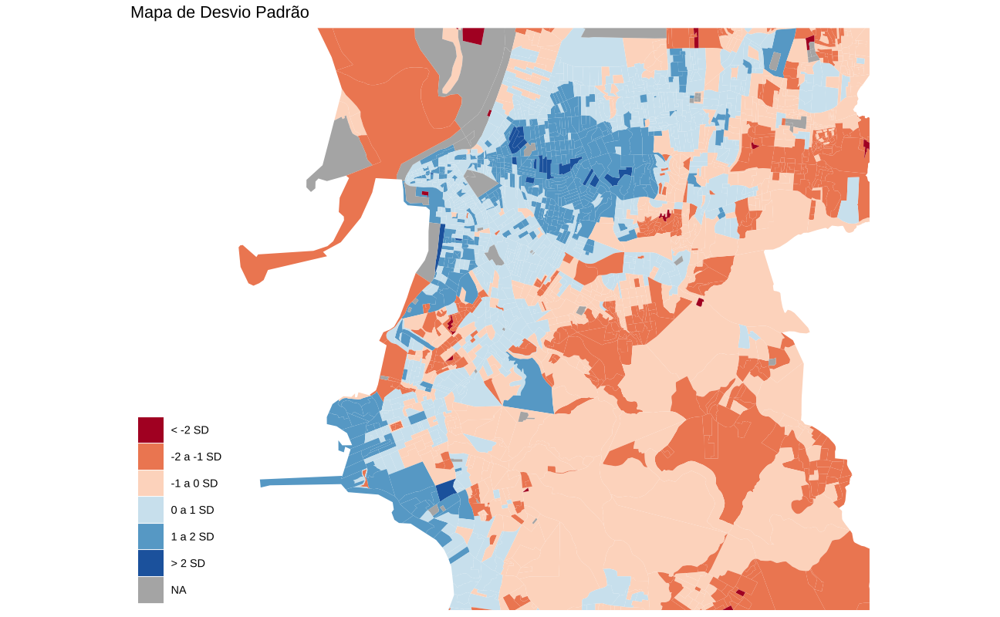